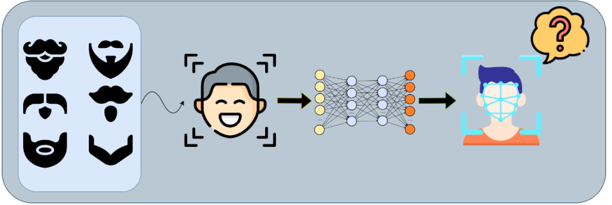

Featured Publications



I am a Research Scientist at Altos Labs. Currently, I am working on building world models for capturing the essential pattern of biological data Before this, I earned my PhD degree at the University of Notre Dame, where I worked with Prof. Kevin W. Bowyer at the Computer Vision Research Lab (CVRL).
The long-term goal of my research is to improve the transfer learning, zero-shot, and few-shot capabilities of foundation models, and to understand how models can effectively learn useful knowledge from noisy data.
Leading a team to build a world model for capturing essence of biology from low-quality data.
Achieving identity-controlled large-scale face generation dataset generation (thesis link). I am the first one showing images can be directly generated from representation feature (Vec2Face and Vec2Face+)
